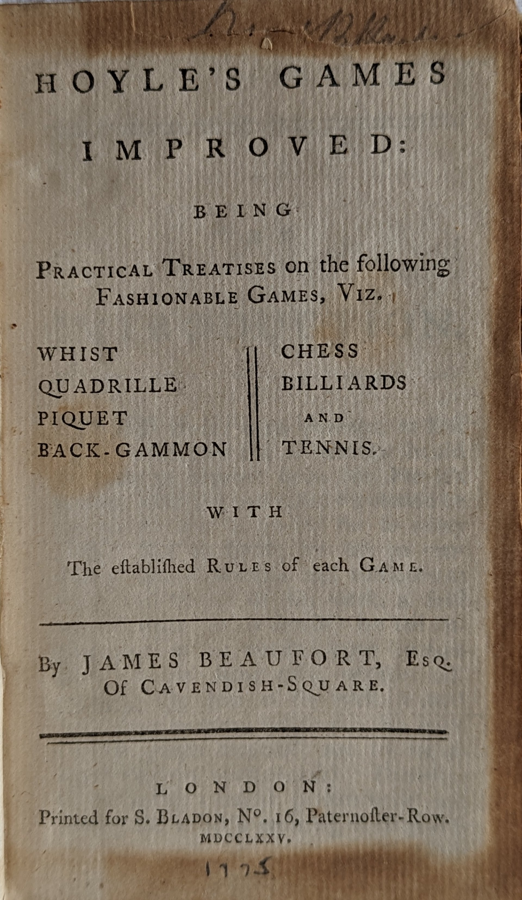

A Descriptive Bibliography of Edmond Hoyle
Copyright © 2014-26 by David Levy
(page updated 2025-04-29)User Guide
Beaufort.1
Hoyle's Games Improved, printed for S. Bladon, first London edition, 1775.
 |
Title: | HOYLE'S GAMES | IMPROVED: | BEING | Practical Treatises on the following | Fashionable Games, Viz. | [four lines to left of double rule] WHIST | QUADRILLE | PIQUET | BACK-GAMMON | [four lines to right of double rule] CHESS | BILLIARDS | AND | TENNIS. | WITH | The eſtabliſhed Rules of each Game. | [rule] | By JAMES BEAUFORT, Esq. | Of Cavendish-Square. | [oxford rule] | LONDON: | Printed for S. Bladon, No. 16, Paternoſter-Row. | MDCCLXXV. |
| Collation: | 12o: π2 a4 B–I12 K8 [$½ signed; signing D4 as D3, D5 as D4, D6 as D5]; 110 leaves, pp. [2 ] [i] ii–iv [v–x], [1] 2–120 [121] 122–146 [147] 148–198 [199] 200–208 [misprinting 192 as 19, 194 as 190, 198 as 171] |
| Contents: | Signature (Page) Reference | Contents | Signature (Page) Reference | Running Titles |
| π1r | title | |||
| π1v | blank | |||
| π2r–a1v (i–iv) | ‘[double rule] | THE | INTRODUCTION. | [...]’ | π2v–a1v (ii–iv) | ‘INTRODUCTION.’ | |
| a2r–a4v (v–x) | ‘CONTENTS. | [...] | ERRATA. | [...]’ | a2v–a4v (vi–x) | ‘CONTENTS.’ | |
| B1r–E1v (1–74) | ‘[double rule] | A | TREATISE | ON THE | GAME OF WHIST. | [...]’ | B1v–E1r (2–73) | ‘A Treatise on the | Game of WHIST.’ | |
| E1v (74) | ‘A Treatise on the, &c.’ | |||
| E2r–F12v (75–120) | ‘A SHORT | TREATISE | ON THE GAME of | QUADRILLE, | WITH | The MEDIATEUR, | The FAVOURITE SUIT, | The MEDIATEUR SOLITAIRE; | Together with ſome new Deciſions. | [...]’ | E2v–F12v (76–120) | ‘A Treatise on the | Game of QUADRILLE.’ | |
| on E4r (79) | ‘Game of QUADRILLE,’ | |||
| F12v (120) | ‘A Treatise on the, &c.’ | |||
| G1r–H1v (121–146) | ‘A SHORT | TREATISE | ON THE GAME of | PIQUET. | [...]’ | G1v–H1r (122–145) | ‘A Treatise on the | Game of PIQUET.’ | |
| H1v (146) | ‘A Treatise on the, &c.’ | |||
| H2r–I1r (147–169) | ‘A SHORT | TREATISE | On the GAME of | BACKGAMMON. | [...]’ | H2v–I1r (148–169) | ‘A Treatise on the | Game of BACKGAMMON.’ | |
| I1v–I6r (170–179) | ‘A SHORT | TREATISE | ON THE GAME of | CHESS. | [...]’ | I2v–I6r (172–179) | ‘A Treatise on the | Game of CHESS.’ | |
| on I2r (171) | ‘A Treatise on the, &c.’ | |||
| I6v–K3v (180–198) | ‘A SHORT | TREATISE | On the GAME of | BILLIARDS: | [...]’ | I7r–K3r (181–197) | ‘A Treatise on the | Game of BILLIARDS.’ | |
| K3v (198) | ‘A Treatise, &c.’ | |||
| K4r–K8v (199–208) | ‘AN | ACCOUNT | Of the GAME at | TENNIS; | [...]’ | K4v–K8v (200–208) | ‘Game of Tennis.’ |
| Catchwords: | B9r(17) II. In [II. Similar]; C6r(35) A [VIII. ]; C10r(43) CHAP [CHAP.]; D5v(58) The [CHAP.]; D7r(61) Ditto [Firſt]; D8r(63) QUART [QUART,]; D12r(71) CHAP [CHAP.]; E1v(74) A [A]; E10r(91) deal [the deal]; F8v(112) XL. He [XL. He,]; H1r(145) diſcarding [diſcarding,]; H3r(149) CHAP [CHAP.]; H3v(150) VIII. Six [VIII. Size]; I12v(192) Seven [Six] |
| Press Figures: | B2v(o):4; B11v(i):7; C7r(o):2; C12r(i):1; D1v(i):7; E5v(i):3; E7r(o):7; F2v(o):1; G5v(i):4; G12v(o):3; H6v(o):5; I5v(i):1; K2v(o):3 |
| Publisher: | Samuel Bladon |
| Notices: | 1775-06-02 Lloyd's Evening Post: “This day is published, neatly printed in one volume, 12mo. Price 3s.
bound in Red, Hoyle's Games Imrproved...With the established rules of each
Game. By James Beaufort, Esq; of Cavendish-square.” 1778-03-03 St. James's Chronicle or the British Evening Post: “Printed for A. Hamilton, jun...and sold by S. Bladon...Mr. Beaufort hopes the public will not confound his work with an obsolete book of the same kind, the proprietors of which have not only stolen his plan, but purloined his title, as he is justly apprehensive his reputation will suffer by the mistake, besides the superiority this treatise can claim from the manner with which every subject is treated (being of the greatest service to the most uninstructed, as well as to the deepest connoisseur). The addition of the polite games of billiards and tennis, clearly decide which is the most worthy the attention of the public.” |
| Reviews: | 1775-06 London Review: "Since Mr. Beaufort's publication, the booksellers, who were proprietors of Hoyle's Games, have advertised the sixteenth edition of that work; which they affirm to be the only genuine edition, with Hoyle's last corrections and improvements. Mr. Beaufort may possibly have out-hoyled Hoyle; for our part we confess our ignorance in the science." (Google). |
| Price: | 3s. (advertisement, review) |
| References: | ESTC T118357, Horr 148, Jessel 89, Rather 54 |
| Copies Seen: | BFl [I.795/HOYL (b1124798)]; L [1607/562] (ECCO); O [Jessel f.107]; OCl [789.87H F75B]; PPL [Iu Beau]; TNJ [GV1227.B3 1775]; Levy [1223] |
| Other Copies: | NT [PEN]; SHp; CtY [Walpole 63.775.H85As]; LU [GV1201.B4 1775]; MiU [GV1201.B38]; N [793 H86c]; NNStJ [GV1201.B4 1775]; NjP [42845.479.181]; PSC [TR GV1201.B38]; AuANL [RB DNS 5365] |
| Notes: | The PPL copy has different press figures in gathering K although the setting of type is the same. There is no press figure on K2v and a '1' on K8r. |